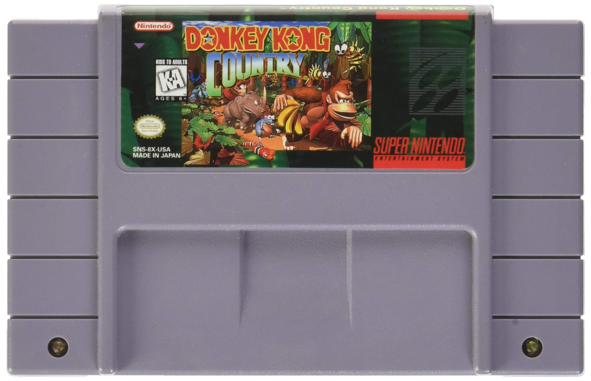

You're jumping into a wild jungle adventure as Donkey Kong, with his little buddy Diddy Kong.
You're on a mission to get back your stolen banana hoard from the evil King K. Rool and his kremling crew. This game's all about swinging through lush jungles,
bouncing over mine cart craziness, and diving deep into underwater levels. You're dodging baddies, collecting bananas, and grabbing those extra-life balloons.
It's a total blast of platforming action with some rad graphics and tunes that are just bananas!
Good CharactersDonkey KongDiddy Kong Funky Kong |
BossesVery GnawtyMaster Necky King K. Rool |
Some ItemsBananaSnagging 100 bananas is your golden ticket to an extra life. These bananas are everywhere, dude – the most common loot in the game. It's like every time you turn around, there's a bunch just waiting to be grabbed. Stack 'em up to keep those lives coming and the Kongs swinging! Large Banana  Each boss is guarding this massive banana, and snagging it means you've just conquered one of the game's worlds. It's like your big, golden trophy for showing those bosses who's boss! Donkey Kong Baloon In Donkey Kong Country, life balloons are your extra life jackpot. Red balloons score you one life, green ones two, and the rare blue balloons bag you three. Keep an eye out for these colorful lifesavers! |

|